把舞台上的光分给大家
情境：庄庄打进决赛，旅馆摆酒庆功。她把荣誉归给所有人，说这光属于冬去春来。
遇到这种情况，可以这样做
- 一个人出头的时刻，别忘了背后托举过你的人。
- 把个人成就放进集体叙事里，喜悦会翻倍，动力也更持久。
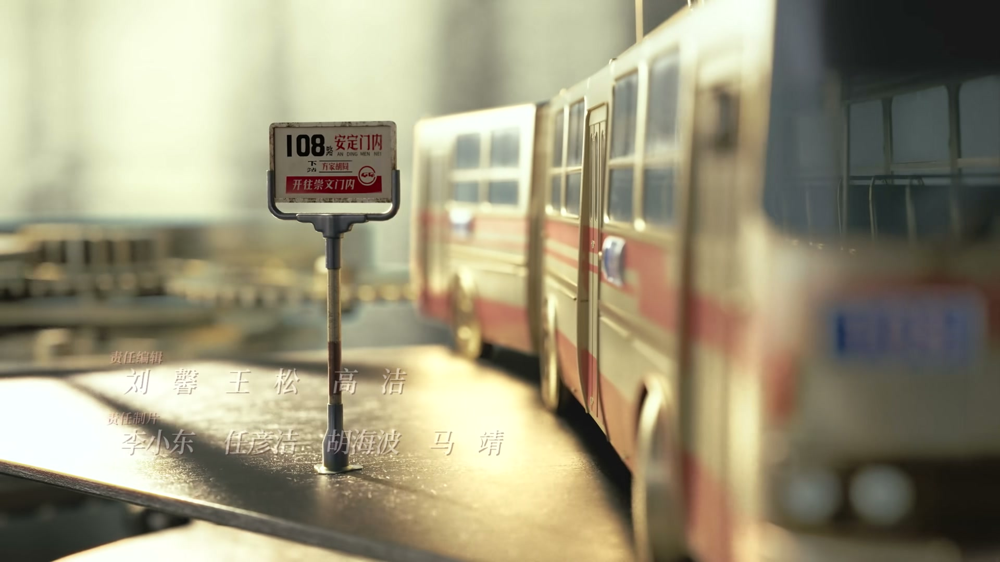
Drama Recap · 剧情图文总结
第 23 集 · 剧本被看上了
庄庄打进青歌赛决赛，旅馆摆酒庆功；徐胜利的剧本被外地电视厂看中，翁导带他四处拉投资，隋老板许以六成资金却另有算盘；曹广太媳妇的手术费在众人的帮扶下凑齐，而一纸贷款合同正悄悄埋下隐患。
庄庄闯进青歌赛决赛，冬去春来旅馆张灯结彩摆下庆功酒。徐胜利的剧本终于被外地电视厂看中，却被资金拦在半路；翁导陪他四处求人，遇上财大气粗的隋老板。同一天，曹广太媳妇姜红梅等来手术机会，众人凑钱解围；陶亮亮则一头扎进“对缝”的生意里。热闹之下，新的风险正在聚拢。
庄庄成功进入青歌赛决赛，旅馆的伙伴们连夜张罗庆功宴，一人一道菜凑成一桌心意。老曹把节目排得热热闹闹，庄庄却说这份光荣属于大家，旅馆里第一次有了“大家都好了”的味道。
剧里的鸡毛蒜皮，往往是人生的缩影。这些情节不只是故事——当你在现实中遇到同样的处境时，它们能提醒你：先做什么、别做什么、怎么说才有效。
情境：庄庄打进决赛，旅馆摆酒庆功。她把荣誉归给所有人，说这光属于冬去春来。
情境：徐胜利的剧本石沉大海，庄庄悄悄替他投稿，才等来电视厂的肯定。
情境：姜红梅的手术费要自筹，徐胜利、庄庄、曹野、好运哥、小东北纷纷解囊。
情境：隋老板愿投六成，却要求银行贷出的款打进他的账户“方便管理”。
情境：为了帮徐胜利开机，翁导用自己的房子做担保去申请贷款。
情境：赵敏琴查出肺癌中晚期，医生说结果出来得有点晚了。
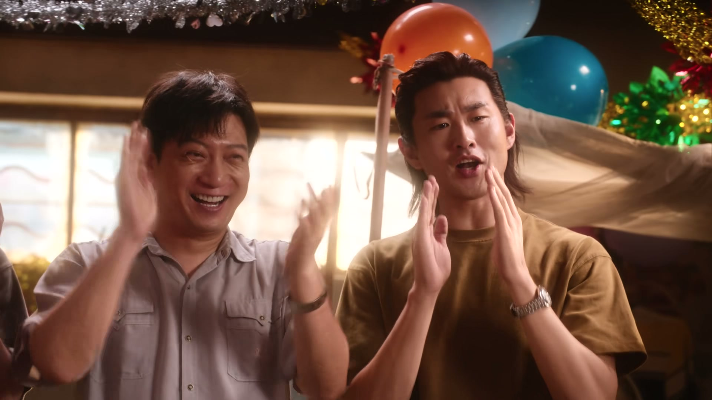
庄庄在青歌赛中脱颖而出打进决赛，消息传回冬去春来，旅馆上下都沸腾了。老曹张罗着把节目排起来，要在庆功宴上热闹一场。
徐胜利、曹广太、好运哥、小东北、沈冉冉围坐一桌，老徐发话今天这桌菜要有心意，一人做一道，凑成了一桌特别的庆功酒。庄庄说这荣誉是大家的，这份光属于整个冬去春来。
关键台词 · KEY QUOTES
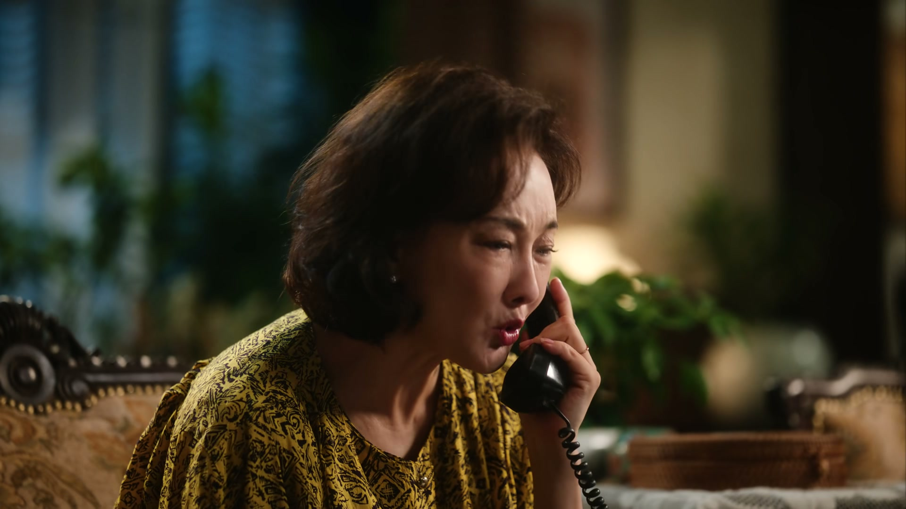
沈冉冉接到家里打来的电话，母亲又要钱。冉冉刚解释表演学费已经花了不少，母亲却坚持要她为家里做贡献。
挂了电话，冉冉一个人坐在楼梯上发呆。舞台上的荣光再亮，也照不散这通电话带来的寒意。
关键台词 · KEY QUOTES
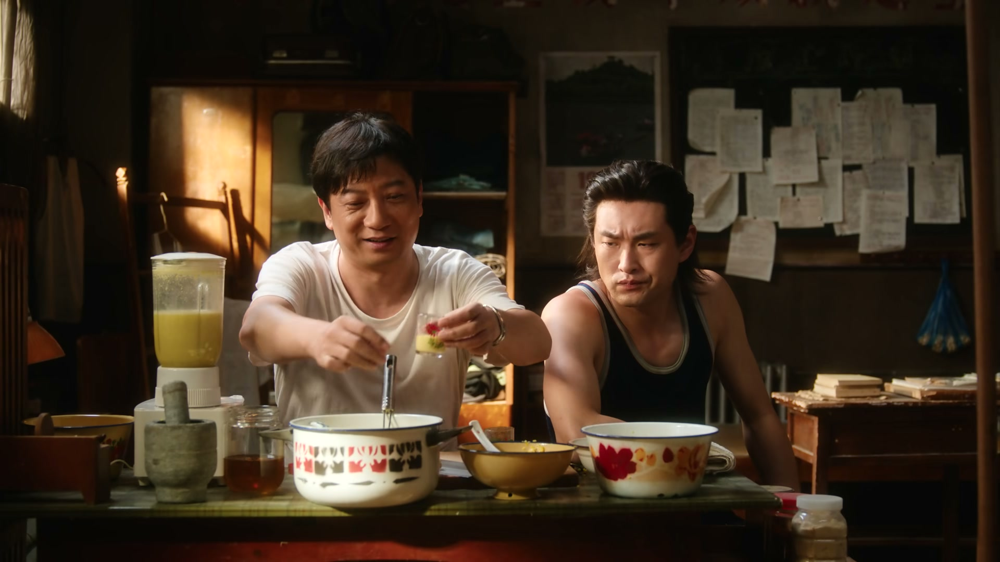
庄庄在旅馆里鼓捣出新鲜玩意，徐胜利问她是在捣蒜还是在干装修。庄庄献宝似的端出家乡的山药汁，又配上炸鸡，非要徐胜利尝尝。
好运哥从外面演出回来，徐胜利招呼他一起吃两口。热闹的旅馆日常里，庄庄和徐胜利的距离又近了一点。
关键台词 · KEY QUOTES
制片主任翁导给徐胜利带来好消息：外地一家电视厂收到了他的剧本，觉得非常不错，整体上是肯定的。徐胜利以为石沉大海的稿子，竟真的被人捞起来了。
庄庄抿着嘴笑，说自己只是帮他把剧本投了出去。徐胜利后知后觉，原来“西天取经”的路上一直有她护航。两人约好，以后想她就能随时呼她。
关键台词 · KEY QUOTES
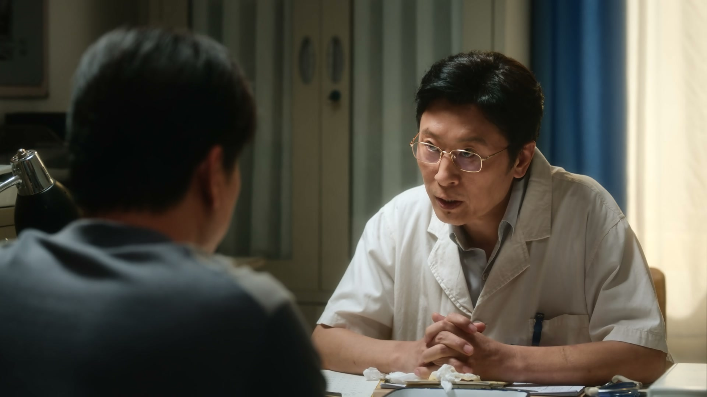
翁导把底交了出来：电影厂说这么好的本子无论如何应该投一点，但大头的资金还得徐胜利自己解决。一边是开机的希望，一边是六十万资金的天堑。
医院里，医生告诉曹广太：原本定好的患者心脏有问题做不了手术了，目前最符合条件的是他爱人姜红梅，但手术费、耳蜗费、康复费全部自费。希望和压力同时砸了下来。
关键台词 · KEY QUOTES
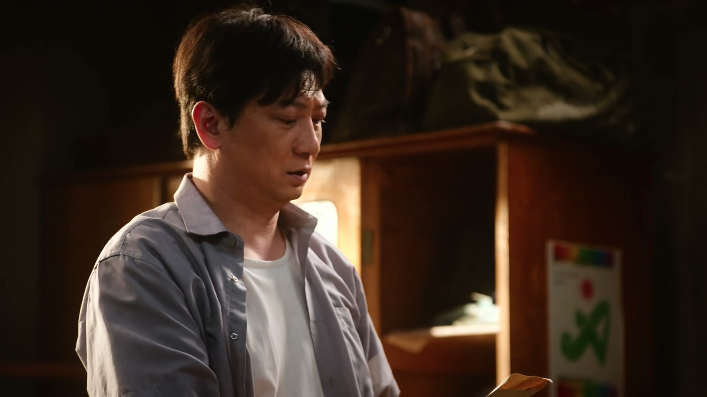
徐胜利和庄庄拿着积蓄找上门，说是心意，其实是不肯收的借条钱。曹广太嘴上嫌弃，心里明白这份情义有多重。
曹野把兜里的钱全掏了出来，说嫂子的事一直想尽份力；好运哥、小东北也各有表示。旅馆的人不富裕，但在这件事上没有一个人后退。
关键台词 · KEY QUOTES
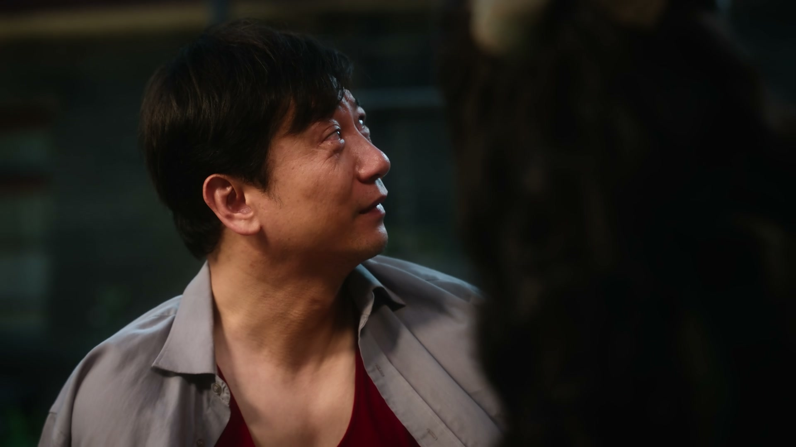
徐胜利带着庄庄爬上屋顶，说要给她摘月亮。他讲起父亲小时候的“把戏”：在面前放一个大水盆，月亮就落在水盆里。庄庄听完笑着说爸爸是个大骗子。
两人聊到眼前的难关，庄庄说不着急用钱，先把月亮摘下来。徐胜利心头发烫，这段同甘共苦的日子比任何甜言蜜语都动人。
关键台词 · KEY QUOTES
翁导组局，把财大气粗的隋老板介绍给徐胜利。隋老板一开口就问是聊艺术还是聊生意，说自己需要的不是钱，而是诚意和信心，简称诚信。
他开出的条件十分诱人：愿意投大头六成资金，但前提是徐胜利从银行贷的款要打到他的账户上，说是方便管理。徐胜利心里犯了嘀咕，可又舍不得这个机会。
关键台词 · KEY QUOTES
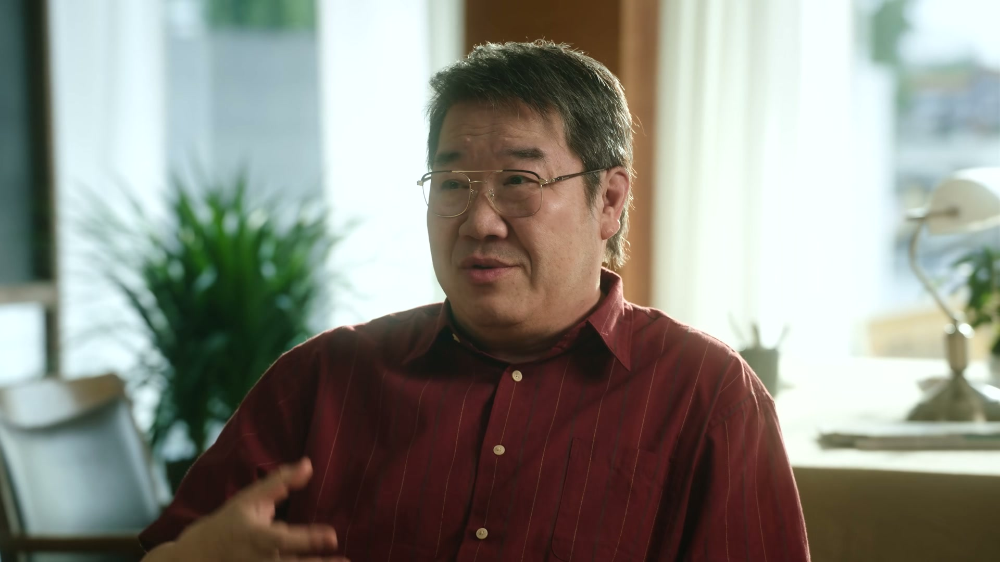
为了凑齐资金，翁导决定豁出去：把自己家的房子拿出来给徐胜利做担保，去银行申请贷款。这份信任重得像一座山。
徐胜利动容，翁导却反过来给他打气：开拍以后会遇到各种困难，但这一切都压不住他现在这份劲儿。还约定开机那天要瞒着庄庄，把她骗过来“震一大跟头”。翁导感慨，人世间的事远比电影精彩，沉沉浮浮，可能就在一夜之间。
关键台词 · KEY QUOTES
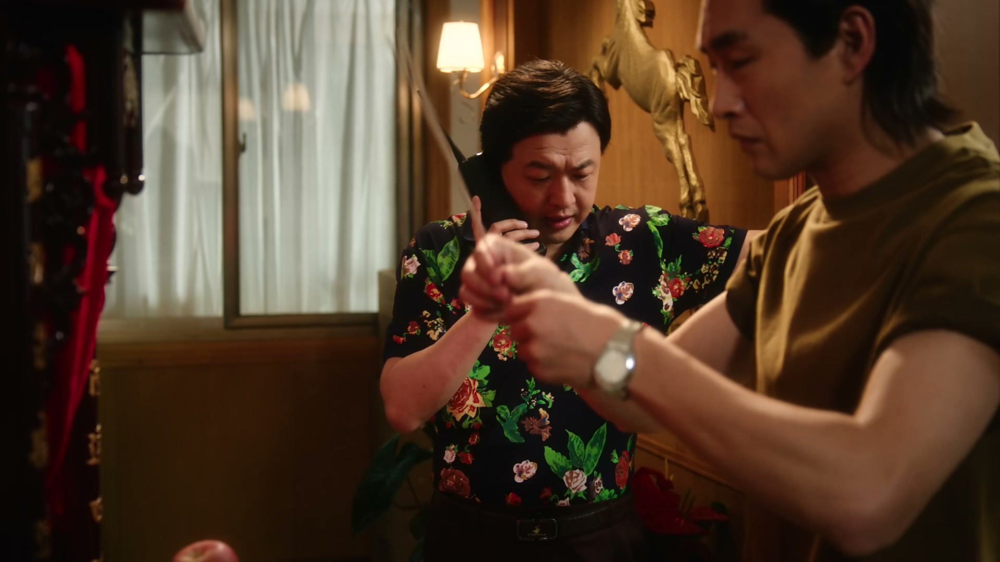
眼看大家各有各的奔头，陶亮亮也坐不住了，缠着好运哥学本事。好运哥交底：他现在干的行当叫“对缝”，有人买货有人卖货，互相不认识，中间人牵线搭桥挣差价。
陶亮亮听得两眼放光，说只要能把大奔开回来，头上插的都是天线都行。萨克斯风少年放下乐器，转身钻进江湖的缝隙里找机会。
关键台词 · KEY QUOTES
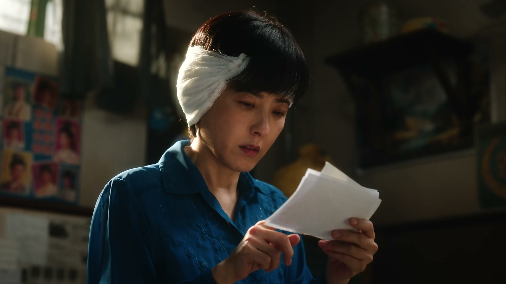
曹广太带老伙计赵敏琴去医院复查，医生看着片子沉默半晌，说出结果：肺癌，出来得有点晚，已经到中后期了。诊室里的空气一下子凝固。
曹广太强撑着说“他不会有事的”，医生只能留下一句“我们不敢确定，但会尽全力”。生老病死第一次这样直白地砸进这群拼命往前奔的年轻人中间。
关键台词 · KEY QUOTES
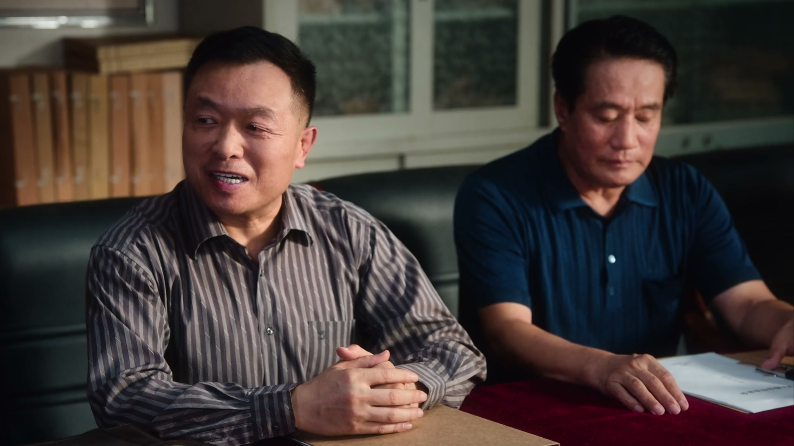
画面切到温州，一场外资入股合作洽谈会拉开帷幕。主持人高声宣布本着公开平等的原则解决厂里的困难，各路老板与港商代表落座，气氛热络而微妙。
唐厂长出面应酬，而自称在内地考察过很多企业的“港商”开口就是压价。谈判桌上一来一回，暗流已经在水面下涌动，没人知道这场“合作”的底牌是什么。
关键台词 · KEY QUOTES
剧本终于被外地电视厂看中，却为六十万投资四处奔走，与翁导并肩闯过资金难关。
打进青歌赛决赛，旅馆为其庆功；偷偷帮徐胜利投稿剧本，又拿出积蓄帮他凑手术钱。
被家里一个又一个要钱的电话压得喘不过气，独自坐在楼梯上消化委屈。
见伙伴们各有奔头，缠着好运哥学“对缝”，发誓要开回一辆大奔。
为媳妇姜红梅的手术机会奔走凑钱，又陪老伙计查出肺癌，强撑着不让眼泪掉下来。
看中徐胜利的剧本，为他牵线拉投资，甚至押上自己的房子作贷款担保。
自称只要诚信不要钱，许诺投六成大头，却要求银行贷款打进自己的账户。
在买主卖主之间牵线挣差价，把自己的行当讲给陶亮亮听。
老徐发话要有心意，旅馆众人一人做一道菜凑成一桌，把庄庄的决赛喜讯吃出了年味。
庄庄一句“那肯定是有人帮着你西天取经了”，让徐胜利明白剧本得见天日背后的那双推手。
徐胜利用父亲“一盆水变出月亮”的老谎话给庄庄画饼，最后却认真地说：先给你摘月亮。
谈不拢投资，翁导便把自己家的房子摆上担保桌，这份孤注一掷的信任胜过千言万语。
一边是姜红梅的手术机会，一边是赵敏琴的肺癌诊断，命运的礼包在一天之内同时拆开。
隋老板坚持贷款要汇入自己名下“方便管理”，这笔绕道走的钱，为后来的卷款跑路埋下伏笔。
房子是翁导全部的身家，一旦资金链断裂，这把担保的刀会先砍向他自己。
自称考察过无数内地企业的港商开口压价，背后另有王厂长与托儿设的局，骗局正在收网。
医生那句“不敢确定”，让这位老演员的命悬在了手术台上，也预告着旅馆即将迎来的生死一课。